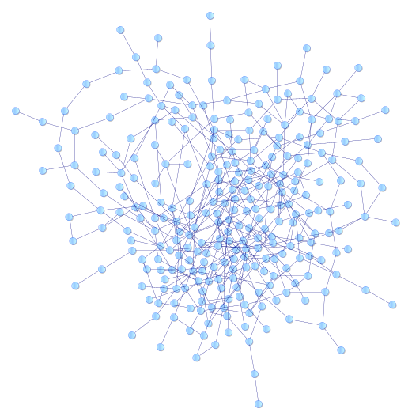

Graph transformations

Graph transformation is an essential concept to understand to understand those projects.
Signature
The graph transformations signature is homogeneous:
Let g be a graph transformation.
g(G) = G'
If G ⊂ G', then g is said to be non destructive.
If G ⊄ G', then g is said to be destructive.
Implementation notes
a. A root node is often very practical to associate the applicability of a transformation from a certain root node.
b.Domain and range of graph transformations are not so easily defined (lots of works in the mathematical fields on that topic).
In order to create a workable model, we will define the special value NOT_APPLICABLE. Consequently, we can write:
g(G1) = NOT_APPLICABLE
∀ g, graph transformation, g(NOT_APPLICABLE) = NOT_APPLICABLE
Graph transformations can be composed
Let g and h graph transformations. g o h and h o g are graph transformations.
This defines:
- The basis of reusability;
- The possible existence of a "graph transformation base" of basic graph transformations.
Basic set of graph transformations
See the special pages:
Applicability of graph transformations
See:
Note: to be declined in Sparql.
Grammar for graph transformation
In the context of the page on industry data, please have a look at the grammar of graph transformation.
(Last update: June 2020)